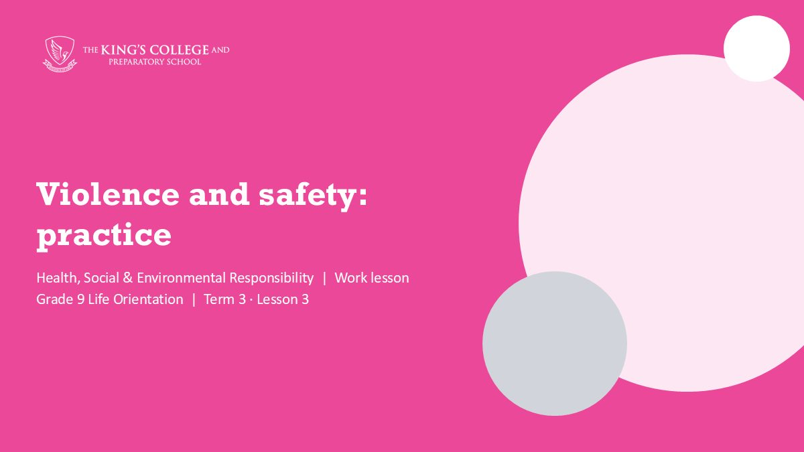

Term 3 · Lesson 3 · Work lesson: written practice
Violence and safety: practice
Start here
Today I will
- Revise violence and staying safe from my Handbook
- Answer IEB-style questions about a scenario, including a 4-mark answer
- Mark my work and plan how to improve
Quick quiz: name FOUR types of violence and TWO numbers to call for help.
Words to know
- Cyberbullying
- Bullying through phones, apps, games or social media.
- Gender-based violence (GBV)
- Violence against someone because of their gender.
- Bystander
- Someone who sees harm happen but does nothing.
- Upstander
- Someone who safely takes action to stop harm or help the victim.
Slides

Notes
This lesson revises: Term 3 · Lesson 2: Violence and staying safe. Read those notes first, then do the written practice.
Name the type, explain the harm, and recommend safe action and where to report.
Written practice
Lerato joined Aarav and Mia's Grade 9 class this term and made the netball team. Since then, two boys in the class WhatsApp group have been posting edited photos of her with cruel comments about her body. Others reply with laughing emojis. Last night one of the boys wrote: 'Wait for her after practice.' Lerato has stopped going to practice and eats lunch alone. Aarav and Mia feel bad, but they tell each other: 'It's not our business.'
- 7.1Define the term 'cyberbullying'.(1 x 1) (1)
- 7.2Identify TWO types of violence in the source.(2 x 1) (2)
- 7.3Justify why the message 'Wait for her after practice' must be reported immediately.(1 x 3) (3)
- 7.4Explain TWO ways in which the bullying could affect Lerato's well-being.(2 x 2) (4)
- 7.5Name ONE South African law that protects Lerato and ONE place or number where the bullying can be reported.(2 x 1) (2)
- 7.6Recommend TWO safe actions Aarav and Mia can take as upstanders. In each answer, also give the result.(2 x 2) (4)
- 7.7Evaluate Aarav and Mia's view that 'It's not our business'. Refer to Lerato's rights in your answer.(1 x 4) (4)
Finished early?
Try the violence and safety set from the Term 3 exam practice bank, or take on the challenge question.
- Turn to the Term 3 exam practice bank at the back of your Activity Book and find Set B: Violence and staying safe.
- Answer two questions, OR the challenge: 'Evaluate the statement: "If you are not the bully, it is not your problem." (1 x 4)'
- Start with your judgement, then give a reason, a qualifier and an outcome.
- Mark yourself with the Term 3 exam practice memo on Google Classroom and note what was missing.